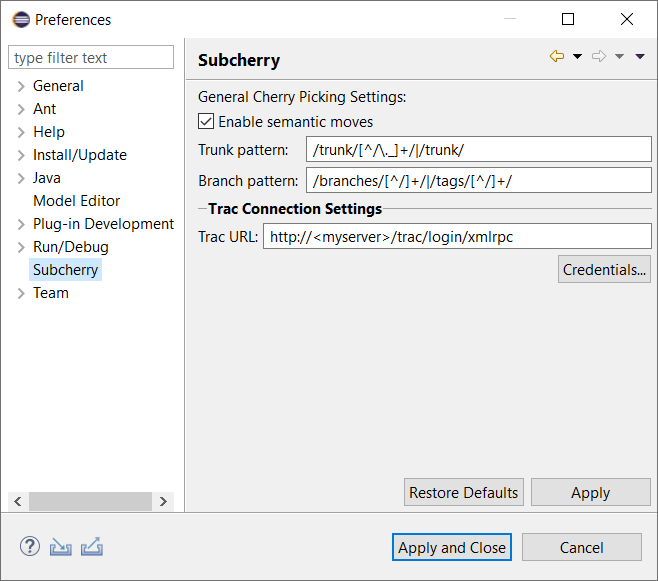
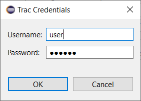

Before running Subcherry for the first time, its global settings should be reviewed and adjusted to match the current environment. In this chapter, each global setting is explained in detail. To edit the global settings for Subcherry, please open the eclipse Preferences dialog and select Subcherry. 
When replaying revisions from one branch on another, svn copy operations are semantically analyzed in order to distinguish between inter-branch and intra-branch copies.
Inter-branch copies are detected when the source copy path is outside the receiving branch. Usually, such copies are created when creating branches (e.g. svn copy /trunk /branches/feature_1234).
Intra-branch (or branch-local) copies however occur when resources are copied from one subtree of a branch to another subtree within the same branch. The typical use case for intra-branch copies is the svn move operation for moving or renaming resources.
Enabling this setting will force Subcherry to detect branch-local copy operations and replay these in a semantically correct way. In other words, when replaying the copy operation
svn copy /branches/feature_1234/foo.txt /branches/feature_1234/bar.txt
on /trunk Subcherry will actually execute the semantically equivalent
svn copy /trunk/foo.txt /trunk/bar.txt
when this setting is enabled thus preserving branch-local history of foo.txt for bar.txt. Disabling this setting would result in
svn copy /branches/feature_1234/foo.txt /trunk/bar.txt
being executed which will lead to bar.txt originating from another branch and thus losing its branch-local history.
A regular expression describing the pattern to be used for resolving the repository trunk layout which is crucial for identifying branch-local copy operations. The default value is /trunk/[^/\._]+/|/trunk/ which assumes the default SVN repository layout of the following form:
repository trunk <category> <module>
A regular expression describing the pattern to be used for resolving the repository layout for branches. As with Trunk pattern, it is crucial for identifying branch-local copy operations. The default value is /branches/[^/]+/[^/]+/|/tags/[^/]+/[^/]+/ which assumes the default SVN repository layout of the following form:
repository branches <category> <branch> <module> tags <category> <tag> <module>
In order for Subcherry to be able to resolve feature issues from trac the XML RPC access URL has to be configured. The default value http://<myserver>/trac/login/xmlrpc is one of the most commonly used URL patterns and requires users to replace the <myserver> part with the appropriate host name or IP address of the trac server instance.
Along with the Trac URL, the access credentials are required in order to be able to access the specified trac instance. These credentials can be provided by pressing the Credentials... button. 
NOTE: The values entered in the above dialog are stored in an encrypted form using the eclipse's secure storage implementation.